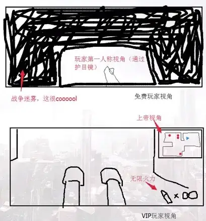

第一章 首先要有一个脑
1-1 课程概述
同学们大家好，欢迎大家来到游戏心理学的慕课课堂。
在这门课里，我们将课程分成 6 大部分，从不同角度来跟大家一起探讨游戏中所涉及的心理学因素。今天起，就让我们就先从人类生理的角度展开学习。
我们经常说玩游戏能让人快乐，而这种快乐的生理基础是什么呢？
首先，我们要有一个脑。 大脑是人类的思维器官。对于这个观点，我们都认同，而且觉得是天经地义的。但实际上，从我们日常的语言中可以发现，无论是否有宗教信仰，我们都曾说过这样的话：比如“我的心灵是自由的”，或者“艺术作品要有灵魂”等等。 这样的说法不仅仅是在汉语中有，人类的其他语言也能够看到类似的表达。可以看出来，虽然语言体系不同，但是解释世界的方法在本质上是趋同的，可以说在我们长达数千年的文明传承之中，这种二元论的观点已经成为了我们生活中的一部分。
而实际上，**我们的喜怒哀乐也好，爱恨情仇也罢，都只不过是大脑中神经元之间的生物电而已。**在下一节课中，我们会一起来看看大脑的生理结构以及工作原理，而现在说到二元论，就继续来聊一聊这个很有意思的现象，就是我们一边从科学的角度来讲，都认同说身体与思维是不可能分离的，但是另一边又很难将这种二元论的表达完全从自己的语言当中排除掉。
为什么会这样呢？仔细想想，存在**“精神与肉体可以分离”**的这个假设，对谁来说是特别好的事儿呢？没错，作家、编剧、游戏设计师。小说、影视、动画和游戏是最需要奇思妙想的艺术形式。借用这种二元论观点，作者们就可以最大限度地发挥创造力。所以在这些作品中，我们能看到转世轮回的故事，能理解鬼狐仙怪在故事当中成为你的敌人或者盟友，能操作德鲁伊改变身体形态使用特殊能力，也能接受王子被魔法变成青蛙的这种设定，也愿意看两个角色因为灵魂互换所产生戏剧冲突。这些故事让我们在身处这种一成不变的、模式化的、甚至单调的生活当中的时候，能感受到一种冲破现实的快感。
不少游戏玩家会开玩笑说：“不会变身的 boss 不是真正的 boss”， 其实不光是 boss，我们自己控制的角色如果在游戏中的变身，也丝毫不会影响我们对于自身同一性的认知。换句话说，在游戏中，无论我们的角色是人类也好，是动物也好，是一个物体也好，这个代表我们的化身无论怎么变，我们都不会觉得说， “角色变样了，这就不是我了”，而是会在完全没有意识到的很短的一瞬间，就接受了这个新的形象新的化身就是我们自己。
这个过程我们现在说起来，大家觉得是理所当然的。但是讲道理，这都得益于我们神奇的大脑，是它一直在默默地努力地，不计个人得失地辛勤工作，才让我们从游戏当中获得最神奇的体验和最大的快乐。
那么从这个看着简单，实际研究起来非常有意思的问题开始，我们也可以算是管中规豹，可见人类的心理活动和它的表现是特别复杂的。我们后面课程当中大家也会看到，对游戏心理学的研究也是特别多角度和流派的。但总体上看，游戏心理学仍然是心理学的一种应用研究，它研究的基本问题仍然是心（mind）、 身（body）、物（matter）三者的关系。
graph TD
身(身 Body) --- 心(心 Mind)
心(心 Mind) --- 物(物 Matter)
那么本单元后续的课程要向大家介绍的就是游戏心理学研究中的生物学基础，包括感觉、知觉和认知的过程，这些生物学上的特征使我们能够理解游戏， 感受游戏，可以说它们是研究游戏心理学的一个重要基础。
1-2 神奇的大脑
同学们大家好，欢迎大家回到游戏心理学慕课的课堂。
今天我们一起来了解一下我们这个神奇大脑。
从这张图我们可以看出来，我们的大脑从外表看起来并没有什么可称得上神奇的地方。可要知道，这么个不起眼的东西能控制我现在跟大家分享知识，能控制屏幕前的同学们看到我的影像，并且把我识别为“曾经见过的，正在讲课的老师”，同时能听到我在说话，还能理解我说的是什么。
这些我们习以为常的东西，都是依靠我们这个不起眼的大脑里，那些小小的， 更加不起眼的神经元来完成的。这些生物电在实验和观察中其实是很枯燥的，但是在 2016 年 6 月，两位搞艺术的科学家（神经学博士格雷格 • 邓恩（Dr. Greg Dunn） 联手应用物理博士布赖恩 • 爱德华兹（Dr. Brain Edwards））推出了一件艺术作品叫**“自我之影”（Self Reflected）。它展示了大脑在受到艺术作品的视觉刺激之后所发生的活动，而现在我们在看着这个作品，那我们的脑中也正在编织着这样美妙的画面。**这幅作品在今年出现，并不算特别令人意外，因为当代科学在技术上已经足以实现这种模拟和创作。但实际上人类对于脑科学的研究过程是经历了很长时间，做过非常多的实验和研究的。至今我们对于大脑的研究仍然没有完全结束，还有很多未知的秘密等待人类去挖掘。
http://www.guokr.com/article/441754/
早期医学家、解剖学家曾经研究过在大脑的物理的实体上对它进行分区，然后尽力去推断每一个分区的功能，假定人类生理上的特定功能与大脑的特定区域是相互联系的，这就是所谓的“脑功能定位说理论”。也就是说，我们的大脑有一半的位置是用来整合其他区域的信息用的，这部分叫做联合区，除此之外，还有 4 个具有特殊功能的区域。
首先是额叶，从名字就能看出来，它的实际位置就是咱们额头这部分，它对我们的思维活动和行为表现有非常突出的作用, 可以说是与智力密切相关的重要的一个脑区。我们的记忆、判断、分析、思考、操作都是跟它分不开的，在玩游戏的时候，我们所制定的策略，所做的决定，所定的目标，都是靠额叶。其实我们可以看到，**年龄对于选择游戏的影响是确实存在的。小孩儿因为大脑发育不完全，策略类的游戏基本上是玩不了的，软件商店里幼儿游戏几乎没有这种类型的，因为即使做了用户群定位也是错位的，市场很难打开。而老年人的前额叶退化，会导致逻辑判断能力减弱，所以我们看父母和祖辈人群玩的游戏也很少有策略类的，那他们流行的游戏是什么呢，是愤怒的小鸟，各种三消类休闲游戏。这一方面是因为休闲游戏更容易上手，另一方面也是因为制定策略和判断不再是他们最拿手的事儿了。**在这儿也说个题外话，也是因为前额叶退化的缘故，老人是最容易受到经济诈骗的人群，也希望各位收看课程的同学和朋友，能跟家里老人保持经常性的沟通，让怹们能免于被不法分子欺骗。
接下来咱们继续看大脑的功能区，从额叶往后，在我们头顶这部分是顶叶。 它的主要功能是触觉、痛觉、温度觉等躯体感觉。
从额叶往后往下，是枕叶，枕头的枕。它是视觉信息到达的这个部位。
从枕叶往前，在额叶下面，是颞叶。它负责听觉过程、记忆还有情绪。
说了半天，那脑的这些区域是如何统一工作的呢？我们用一个小例子来说明一下，用知乎范儿来说：把屏幕上这个词读出来，是怎样一种过程。
首先我们的眼睛会看到它，然后这个视觉神经刺激会被我们两只眼睛视网膜的视觉神经细胞检测出来，它们会将神经脉冲送到视皮层。随后视皮层将神经脉冲送到颞叶后部一个我们称之为角回的区域，在角回会对这个词的视觉编码与听觉编码进行比较。一旦找到适当的听觉编码，就会把它传送到被称为韦尼克区 （Wernicke’s area）的听皮层，然后在那儿来解码，解释成什么呢？可能是：“哦！ 要读的是这个词！” 之后神经脉冲又被送到控制语言输出的布洛卡区（Broca’s area）， 然后再传送到运动皮层，刺激唇、舌、喉协调发音，我们就能读出这个词了。那这个词是什么？大家一起来读：“宝箱”。
大家中学生物课都学过，我们的大脑其实是左右两瓣儿的，中间靠胼胝体连接起来，而这左、右两个半球控制的基本是你躯体的对侧。当我们专注于从右耳或右侧视野获得信息的时候，左脑会更加活跃。同样，当我们专注于从左耳或左侧视野获得信息的时候，右脑会更加活跃。
通常认为左脑更具语言天分和数学天分，而右脑更敏感，同时也具有更高的空间认知能力。也有研究者认为，我们大脑的左半球更倾向于做出冒险性的决定， 右半球更倾向于使用谨慎的认知模式。说到这个，我们有个设想：是不是可以尝试利用两侧脑不同的优势，来对信息进行分类而有针对性的接收设计呢？而当我们希望玩家做出冒险性决策的时候，把挑战放在视野右侧；希望玩家更加谨慎的时候，把挑战放在视野左侧，这类“心机”会有预期的效果么？目前还没有人进行过类似的实验，也许，你可以试试看。
好，这节课先到这里吧，下节课见。
1-3 镜像神经元
同学们大家好，欢迎大家回到游戏心理学慕课的课堂。
上节课我们提到过，在不同的细分的科学领域，有过很多对于大脑以及与它连接的整个神经系统，还有神经细胞的研究。我们知道人类神经系统是由很多部分组成的，而大脑是其中一个很重要的部分。在神经系统中，最基础的工作单位就是神经元。
不同的神经元有不同的形态和特点，能够实现不同的功能。中学生物课对于神经元细胞的介绍，咱们就不重复了，今天咱们来看的，是一种很有意思的神经元——镜像神经元。
镜像神经元的发现也是从一个实验开始的。对于脑、神经系统这类即使看到外形也不能马上就明白其功能的这些人体的神秘的组成部分，科学家们早期研究的条件跟现在是没法比的，用来研究的实验对象也是有很多的限制并且需要机遇的。毕竟我们不能随便找个人来说：“感谢你为科学事业做出的贡献”，然后就给人家开颅。最早的实验研究的对象是很不容易才能有的，比如说刚刚出了意外去世的人，这医生在救治过程中可能无意发现了什么有意义的情况，有人说还有死刑犯，行刑之后马上研究之类。总之一个原则就是，不能因为科学研究就颠覆人类的伦理道德。所以更多时候，科学家会用跟人类近似的动物进行实验，当然这样也会有动物保护组织等群体会抗议，但是比起来用人类，那还是争议小很多了。
所以咱们说的这个实验，最早是意大利的神经学家在猕猴身上做的，因为猕猴适应性强，驯养繁殖也比较容易。那这实验怎么做呢？科学家在这个猕猴的大脑当中植入电线，去勘测关于“抓住食物送到嘴里”这类功能的神经细胞的活动。 在实验的过程中，当测试人员伸手抓起一些好玩的物品递给猕猴的时候，连接到猕猴大脑的设备显示，测试人员的这个行为激活了猕猴的负责抓握的这个动作的神经元。可是我们说了，并不是让猕猴真的去拿这个东西，只是让它看到别人在拿东西行为。
这种现象特别有意思吧？在此之前，因为脑细胞通常都比较独特嘛，所以没有人能预知说，真的去执行动作和观看别人采取动作会激活同样的神经元。在这个实验里，猕猴只是坐在那儿看，可它的大脑里，却把真正去执行这个实际的动作有关的神经元给激活了。
科学家没有放过这个跟他们原本实验目的并不是完全相符的现象，也正是因为这样，人类首次发现了这种与大脑中其它神经细胞不同的镜像神经元。
镜像神经元分类的话属于运动细胞。它们会向我们的肌肉发送信号，移动身体，采取动作。同时它们又跟运动细胞有所不同，那就是能通过看到他人行为而被激活。
这之后又有科学家进一步利用更精密的设备又进行了更深入研究，这个研究是针对我们去看不同的面部表情的时候，大脑的活动反应的。跟前面的实验类似， 这个研究也发现，当我们看到别人的面部表情的时候，镜像神经元区域与边缘系统都被激活了，换句话说，就是看到面部表情，就会激活镜像神经元，就好像我们自己也在做出同样的表情，然后触发大脑情绪中心的活动，然后我们也会真切体会到这种情绪。有句老话说“伸手不打笑脸人”，用镜像神经元来解释，就是说对方对我们笑，我们就感觉自己也在笑，情绪就得到了缓解，就不想打人了。
那么回到游戏来看，游戏中有没有这样的例子呢？
我们来看《行尸走肉》。
不说 IP 的问题啊，单说这个游戏本身。近年来它算是恐怖游戏中比较有特色也比较有人气的一部作品了。这个游戏 ESRB 的评级是 M，也就是 17 岁及以上。 从题材和评级上就能看出来，肯定是暴力血腥。在玩家的评价和反馈中，有的说这个游戏玩起来让人很紧张，这是有动作要素的恐怖游戏都会有的一种情绪体验。 除此之外，还有很多人说这个游戏特别让人能感同身受，或者说游戏想要传达的这种情感、这种恐慌和纠结，让玩家真的感受到了。
从镜像神经元研究的角度来分析，《**行尸走肉》能够引发我们情感共鸣的一个原因可能就在于：它会频繁向我们展示角色的各种表情，然后我们会投入大量精力去识别它们，然后记住，并且信以为真。**所以可以说，并不是游戏中那些做得不是特别逼真的僵尸让我们觉得恐慌。那么让我们产生这种情感体验的是什么呢？其实就比如视频中 Lee 述说自己在家人之间作抉择是如何如何地艰难的时候，露出的那种神情激活了我们的镜像神经元，让我们觉得自己也在纠结也在痛苦。
**可以说镜像神经元把玩家的经历与游戏角色连接在了一起。如果一款游戏设计了比较多的移情的要素来让玩家获得情感体验，那么考虑利用镜像神经元来达到目的就非常有意义了。**换句话说，是利用镜像神经元的特性，来让玩家将真正与游戏主角融为一体。
这件事说起来好像挺玄乎的，但其实在大多数电子游戏中，玩家在三维空间中移动的时候，就会触发出空间定向镜像神经元了。在《寂静岭》当中也有相同的游戏机制，比如玩家需要将手伸到很恶心的洞里拿出某件东西，这种设计会同时引起玩家的焦虑和恶心两种感受，而这些正是恐怖游戏惯常要传达的的共同感受。尽管这些恐怖游戏提供了不同的敌人、不同的情节、不同的让人难受的方式， 但是对于玩家心理的影响却是遵循了这些内在的科学道理的。
好，这节课就到这里，咱们下节课见。
1-4 生物节律与游戏中的时间
同学们大家好，欢迎大家回到游戏心理学慕课的课堂。
上节课我们一起了解了神经系统，并且对镜像神经元进行了探讨，那么这节课咱们从中枢神经系统调控的生物节律开始。所谓节律，就是节奏和规律。
人类作为生物的一种，我们体内有一些相对有规律的波动周期，这就是生物节律。
在这些生物节律中，有些是以 24 小时为周期的生物节律，从进化的角度来讲，它们反映的其实是我们人类的身体对地球自转引起的昼夜变化的适应，说得更直白一些，最广为人知的生理节律是哪一个？就是睡觉。也有更长期的，比如我们都会感受到的有时候精力特别旺盛，上课都不犯困；可也有时候，我们会觉得脑子也不好使了，玩游戏都精力集中不起来。这也是一种节律。
生物节律呢，不仅是说对我们的生理有影响，有些生物节律也是有心理意义的。比如我们的情绪会受到四季变化之类的长期节律的影响。刘禹锡说“自古逢秋悲寂寥，我言秋日胜春朝”，刘禹锡写诗的时候可能正处于他的情绪的高潮期， 因为这首诗是众多写秋天的诗里面特别不同，特别积极的一首。其他的大多数作品就不一样了，咱们国家的古诗词当中最不缺的就是悲秋之作。如果结合生物学理论来看，秋天是白天慢慢变短，天气也逐渐变冷，这种环境的变化，这种长期节律，是会对人的情绪产生影响的，可能会让人抑郁。所以说诗人的悲秋不能简单归结为说他颓废，消极之类，而实际上是受到生物节律影响的一种非常正常的反应。
从生物节律，咱们延伸到人类对于时间的认识和感受上来。
时间是什么呢？从物理的角度，时间是 7 个基本物理量之一，是人类去描述世界的时候一个最重要的、也是跟咱们生产和生活联系最密切的计量系统之一。与此同时，时间又是相对比较抽象的计量系统，我们能用眼睛看到两个东西，谁大谁小，但是没办法利用感觉器官直接感受时间的长短、快慢，这种感受在不同条件下误差是很大的。比如上课的时候你可能感觉度日如年，玩游戏的时候就感觉时光飞逝。我们只能凭借经验或利用工具测定时间、确定时刻。
在游戏里，对时间这个工具的运用有很多种。首先说街机游戏基本上都有时间限制，它主要是为了经济效益，不能让你无限玩下去，玩得再好，也有结束的时候，要么是通关，要么是续命。而家用机的游戏就有更多设计了。从比较早的游戏开始说起的话，八位机时代，《超级马里奥》在屏幕最上面有一个计时器， 大多数时候它不太会对玩家造成压力，因为它留出的时间是足够玩家去完成当前这个地图的基本任务的。但如果我们想要收集这个关卡中所有的隐藏要素，那就会发现时间还是很紧迫的，尤其时间所剩不多，它的音乐加快节奏的时候，玩家就会开始焦虑，会担心超过时限造成失败。
当然也还有其他类型的时间限制，比如《格斗之王》和一些格斗游戏中，会比较讲究出招的按键节奏，还有一些受身技的施放时机；比如在《合金装备》等潜行游戏当中，会有被敌人发现之后，引发警报，需要玩家在一段时间内改变激进的游戏策略，努力不被抓住来度过警报期再恢复平常状态，比如在一些第一人称视角的射击游戏里，玩家的血条会随着时间流逝而增加，这种机制能够引导玩家运用更多的策略而不是一味的拼命来完成游戏。这些不同时间压力迫使我们在游戏中快速思考，执行反射动作，而不鼓励玩家进行长时间思考或制定创意解决方案，事实上玩家会利用游戏以外的时间反思和回顾，为重新挑战制定计划。
说道思考的问题，在在游戏中还有一种**“时间限制因素”**，也是被广泛使用的，增加游戏趣味的手段。当游戏给了我们一个时间压力，我们在游戏中的决策是会受到很大影响的。比较明显例子有《樱花大战》、《行尸走肉》、还有现在大家看到的《辐射》等等游戏，我们看到它们最常用的游戏机制，就是通过“特定对话”的方式，把时间压力的技巧运用到极致。具体来说，这种游戏机制是要求我们给出一个决策，而这个决策不是让你天马行空随便输入，而是给几个选择， 我们需要在这些选择里挑一个，比如是支持 A、支持 B 还是保持中立；是要迎战还是逃跑；紧急情况下要表达积极态度还是悲观态度等等。在我们思考和比较这些应对方式的过程中，系统会进行倒计时，如果不进行选择就会发生一种预设的可能是中立的结果，没准儿这个选项是你最想排除的那个。
那么在这种情况下，我们的应对是什么样的？我们通常会把每个选项都快速看一遍，同时余光盯着进度条，有的游戏会给声音的提示让你更加紧张，然后在这种情况下，我们往往很难去想一个万全之策，只能凭直觉做出判断。这会造成我们在短时间内出现高度紧张感甚至恐惧感。
“做选择”这个事看起来很简单，但实际上我们每做一次判断都会因为身处的条件和所给的时间长短发生变化，这就是咱们接下来要说的决策场理论。它主要是研究我们如何根据现有的信息结合时间等因素来制定决策的。我们的大脑会通过所有已经掌握的信息过滤一系列选择，随着时间慢慢推移，对每个选择的致胜机率的判断也会发生变化，等到时间都耗尽的时候，我们脑子里就会只剩下一个选择。而时间的压力对制定决策的关键影响就在于：如果改变了给我们来做选择所限定的时间量，是可以极大地改变选择的结果的。
决策场理论实验图
现在大家看到的这个图就是解释决策场理论的实验图：红色是 A，绿色是 B， 紫色是 C，三个选项。最后一条垂直的线是2秒的时刻。我们能够看到，当思考 2 秒的时候，我们会有一个决策：就是 A。但如果将思考的时间减半，中间这道竖线，1 秒的这个时刻，我们看到实验数据显示，谁是最受欢迎的选择？是 C。
那么除了时间因素，另一个制定决策时要去考虑的因素久是：我们如何看待需要去决策的问题。在这儿咱们再说一个**“临时解释理论**”。它是说我们会因自己对某个事物的心理距离而对它产生不同看法。简单来说就是，离这个物体距离越远，解释或认知就越抽象；离它越近，其解释和认知就越具体。
比如当我们考虑打一个 boss 的时候，会考虑打这个 boss 会掉什么装备，能完成什么任务等等；而当我们真正站在这个 boss 面前的时候，脑子里想的可能就是应该先远程攻击，然后在它硬直的时候跑位到到背后续大招等等。离事件越近，事件就越具体和现实，我们就不会再去想为什么要做，而是去想该怎么做。 再扩大一点儿来说，如果玩家得到的是一个非限时的任务，那么就有足够的时间去考虑为什么要做这个任务等等这种抽象问题。玩家可以排除各种选项，提出新的解决问题的设想。而到了制定决策的时刻，玩家的关注点就会逐渐转移为如何去完成这个任务。
所示说在游戏的设计中，我们可以考虑利用时间因素实现游戏的目标导向。 如果想鼓励玩家以实用的角度去完成自由度小的任务，那就要缩减给玩家准备和执行的时间；如果是鼓励玩家发挥创意，或者提出更抽象的理念，那就多给点儿时间，可能会有更好玩的结果出现。
好，关于时间的讨论，咱们就先聊到这里，下节课见。
1-5 视觉与游戏
同学们大家好，欢迎大家回到游戏心理学慕课的课堂。
接下来的几节课呢，我们会一起来探讨视觉与游戏的关系。对大多数人来说啊，失去视觉可能算是最大的不幸之一。我们对世界的构建很大程度上来源于视觉信息，如果不依赖视觉呈现，绝大多数电子游戏简直就没法玩了。
眼睛的结构和成像原理咱们就不在课内细说了，感兴趣的同学可以课后自己来学习。我们更感兴趣的问题是，眼睛能看到这个世界没错，但是对于世界的解读，是靠眼睛就能做到的么？并不是。那还靠什么呢？还靠咱们这个神奇的大脑。 为什么这么说呢？我们来看这张图：这是什么？你可能说，这太简单了，这么有名我还能不知道？《蒙娜丽莎》呀。那这张呢？

这也是《蒙娜丽莎》呀。但是很明显这俩不是一张画，对吧？这张是我们从卢浮宫搬回来的名画，那这张呢？这可能是乐高拼出来的。问题是，我们为什么把这些像素点的画认为是蒙娜丽莎呢？因为咱们在生理上，眼睛这个感受器官只要没毛病，都能看到东西。但是要理解这个东西是什么？依靠的是大脑的认知。 正因为有了大脑来识别、记忆然后整体的理解和构建，我们对自身外部的世界才有了一个我们自己认为真实的感受。
所以现在来看八位机时代的游戏画面，或者是看这两年又复古流行起来的像素风的游戏画面，我们都能看到：**明明就是一些像素点，甚至是一些特别抽象的画面，我们还是能给它们赋予各种意义。**比如《超级马里奥》，很多跟我差不多大的朋友小时候玩八位机的时候都觉得说这个马里奥的头真硬，一有墙就拿脑袋撞，是吧。其实人家任天堂本来想的是拿拳头给打碎的，虽然有点儿乌龙，但是并不妨碍我们自己把它给合理化。还有就是这个游戏：Galaxian。这个游戏有好多名字，小蜜蜂、大蜜蜂、小精灵、星空飞箭等等等等。从名字上就能看出来， 玩家们对这个游戏画面的解读千差万别。从敌人的形态上有一种叫法，从背景的设计上有另一种理解。看到的只是简单甚至粗糙的画面，但是我们用脑补，把它认知成了不同的游戏世界。
不光是对绘画作品，对于整个外部世界，我们都是通过这样的方式来认知的。 在我们身处的这个三维世界当中，我们又是怎么来认知的呢？首先，我们会把环境当中的边缘和直线，从二维的模式给构建成为三维的表征。眼睛汇聚光线，我们的视觉系统能够收集大量的线索，并且对它们进行加工，然后推断距离。比如说，随着离我们正在看的东西距离越来越远，构成这个东西的各个元素就会呈现出更加紧密地往一起聚的纹理梯度。然后呢，又因为咱们左右两只眼睛所接收到的外部世界的映像，略有不同，这种立体视觉能让我们相对准确地判断深度。说着可能有点儿复杂，但实现起来是没有计算延迟的，咱们大脑的 GPU 和显存的配置绝对是顶配了。我们在电影院看的 3D 电影，以及最近特别火的虚拟现实技术， 在对立体视觉或者说深度视觉的模拟上，都是利用了双眼的视察，就是这个“略有不同”。这个理解起来很简单，咱们一起来做个小实验：大家闭起一只眼睛， 左眼右眼都可以。然后呢，保持一只眼睛看东西的状态，抬起两只手，胳膊肘悬空，左右手都伸出食指，然后慢慢地，把左右手的食指对在一起。肯定有不少同学不能完全对正。因为这时候只有一只眼睛从一个角度来看手指，缺少了深度的判断依据。咱们平时看的电影，玩的游戏都是通过或大或小的屏幕，本质上都是一个视角，一只眼睛。而 3D 电影和虚拟现实头盔是把双眼的视差还原回来了， 所以我们就有了立体的感觉。
随着技术的发展，**电子游戏在视觉方面的进步可以说是天翻地覆的，这中间也有非常明确的一个发展趋势，那就是从抽象到仿真。**我们来举赛车游戏的例子， 屏幕上大家能看到不同时期的赛车类游戏的画面。从比较早的八位机时代，俯视的视角，用《火箭车》这种像素来表示玩家驾驶的汽车；然后到模拟追拍视角， 并且把空间立体化的《世嘉拉力》等等，再到《极品飞车》之类我们说考验显卡的 3D 赛车游戏，以及这两年特别热的依靠穿戴设备或者更逼真的硬件来体验的虚拟现实赛车游戏。我们看到画面是越来越接近真实，视角越来越接近真实，操作越来越接近真实。甚至到有的同学跟我说，他去学车，考完交规第一次摸车， 这个车感好得教练就说“你是不是偷偷开过”，同学说不是，我老玩赛车游戏练的。确实是，这类模拟驾驶类的游戏，将来发展的方向就可能不是纯粹的娱乐， 它能够在具备很好的娱乐性的同时，达到技能训练的目的，这是应用游戏的发展和努力方向，这是后话。
好了，这节课就先到这里，咱们下节课见。
1-6-1 视觉与游戏维度 1
同学们大家好，欢迎大家回到游戏心理学慕课的课堂。
在前面的讲镜像神经元的时候我们提到过，在玩游戏，尤其是三维游戏的时候，我们虽然没有真的站起来在游戏的世界里横冲直撞的，但我们的大脑已经激活了相应的神经元，所以我们能够非常投入地去感受这个游戏。
接着这个思路，结合上节课谈的视觉，今天我们一起来谈一个比较有意思的问题。在仿真的三维游戏当中，玩家会身处一个三维空间。咱们要谈的问题就是在这个三维空间里，玩家的视觉感受，或者说能看到的画面，会对游戏难度和玩家情感状态产生影响。

今天咱们以第一人称视角射击游戏为例，边看边说，可能会更加直观一点儿。 最近在我们学校游戏专业毕业生的群里大家聊天时候，调侃游戏策划的各种问题， 有一位毕业生随手画了一张图特别有意思，是说氪金玩家和免费玩家看到的游戏画面的差异，咱们一起来感受一下，这个对于咱们今天要谈的问题可以算是最直观，最一针见血的说明了。
大家可以回想一下自己的游戏经验，**在 FPS 游戏里，我们设想要去去改变游戏的难度，能用的最主要的度量是什么呢？是我们能够通过屏幕看到多少游戏相关的内容。说得专业一点儿，就是玩家的视野和视线。视野和视线带来的最直接的东西就是玩家能够看到的游戏环境以及敌人的信息量，视野越广视线越远，玩家就能越早了解相关的游戏信息，比如敌人距离自己多远，敌我之间有哪些地形优势和劣势需要利用或者回避。**结合前面课咱们“决策场理论”说的时间对于指定决策的影响，那么很容易得到一个结论：在这种情况下，玩家能够有更充足的时间来制定更好的策略，更容易在对战中获得胜利；反过来，如果我们用黑雾或者其他手段来削弱玩家的视野或者视线，那么玩家就会因为对周围环境了解得不够，也因为没有足够时间来应对特定问题，而在对战中处于劣势。
认同了这个问题，接下来咱们来具体看看视野和视线这两个度量的一些比较成型的理论。
首先来看几何视野。简单来说，因为游戏难度是受到玩家视觉信息的接收量的影响的，那么我们要去控制的就是玩家实际上通过屏幕能看到多远的东西，具体来说就是结合游戏整个图像的分辨率，还有几何视野所形成的角度，来衡量玩家的视线。
再结合三维空间渲染问题来看，几何视野就是玩家这个第一人称视角的摄影机镜头的视野。它的广度就是这个镜头拍摄范围的这个锥体的水平跨度的角度，远处的截面就是游戏引擎停止渲染的那个结束点。也就是我们说的“绘制距离”。 这些是实实在在影响到我们在游戏中能看到的什么画面的度量。
除了几何视野之外，还有一个概念叫做显示视野。这个视野是跟玩家到显示器之间的距离，还有这个显示器屏幕的大小密切相关的。为什么这么说呢？大家再来回想一下自己的游戏经历，或者再看一下刚才几何视野的那张图，再或者你现在调整一下距离显示器的距离，慢慢向显示器靠近。有什么结论？除了要不断调整双眼的焦距之外，离我们越近，我们实际上看到的东西的相对数量是越少了。 那么除此之外呢，显示视野在导航还有三维空间的后续难度中也会发挥重要的作用，尤其是针对女性玩家来说。因为有研究显示，当几何视野和显示视野角度的比例是 1:1 的时候，女性玩家会在导航方面有最大的优势。但是这个比例即使变化很大，也不会对男性玩家造成太大影响。换句话说，女孩儿在玩 FPS 游戏的时候，需要把游戏环境调整到自己最舒服的状态，那男孩儿呢，可能蹲墙角也没关系。
再说回来。咱们上节课说过，距离我们越远的东西，它的纹理梯度会越紧密。 换成容易理解的话来说，就是我们看到比较远的东西，能不能看到它的细节？看不到，我们看到的可能是它的颜色和轮廓。那么玩 FPS 的时候也是，远处的敌人我们能够看到能够识别出来是敌人，但是很难瞄准射击，对吧。那么在游戏当中， 就会设计对视野和视线进行控制和选择的游戏策略，比如提供不同的武器——狙击步枪。我们说狙的特点是什么？扩增视线，让我们能够通过瞄准镜看到远处本来只是一个轮廓一个色块的敌人，能够精确瞄准，爆头。那么相应的，狙的弱点是什么？就是减少了显示视野。通过瞄准镜我们只能看到远处的局部，还能不能看到周围更大的环境和其他东西？不能，除非关掉瞄准镜，甩狙。
减心了游戏策划要求制作的那种特别大型的、开放的场景所需要的绘制距离
除此之外还有什么控制视野和视线的方法吗？我们还可以从立体空间的角度来看。有的游戏呢，会设计为让人不能一眼就看到所处空间的全貌，而是用手电筒之类的道具来照亮比较小的区域。手电筒的这点儿亮光，就让小型空间看起来被人为地扩大了，更重要的是这种叫驱散战争迷雾也好，叫去点亮地图开地图也好，其实都是促使玩家去探索房间或关卡的各个部分的手段。可以想象一下， 如果整个房间一进来就是亮的什么都能看到，我们还会进行地毯式的搜索吗？有可能不会，我们可能就判断一下这屋里哪些地方可能有需要的东西，翻一翻，走人。再举例子来说，比较老的游戏《寂静岭 2》用的是浓雾来削弱玩家的视线， 这让我们不得不提高警惕，一定程度上也增强了游戏的沉浸感。这个设计在 PS2 时代其实还有更重要的技术意义，因为这种方法减少了游戏策划要求制作的那种特别大型的、开放的场景，所需要的绘制距离，但同时呢又能给我们造成一种大场景的错觉：看不见不代表没有，走过去就能看到，那么在心理上我们会认为没有渲染出来的那些东西也是存在的。
好，这节课就先到这里，咱们下节课再继续说。
1-6-2 视觉与游戏维度 2
同学们大家好，欢迎大家回到游戏心理学慕课的课堂。
这节课咱们继续以第一人称视角射击游戏为例，来看一看如果把空间和玩家的视线结合起来考虑，会有哪些调整游戏难度的方法。
在游戏世界当中，游戏设计出来的虚拟空间，它的大小其实不是最重要的， 因为上节课咱们说了，玩家最终通过摄像机来看到并且理解游戏世界的。所以我们需要考虑的是玩家的视线、游戏空间，还有敌人接近向量之间的关系。
视线和游戏空间都好理解，那么接近向量是什么呢？简单说就是敌人从哪儿来，敌人向我们接近的时候，是不是在我们当前视野的这个椎体里面。我们作为玩家，是不是要调整摄像机观看的方向？甚至说转头不够了，是不是要改变在游戏中所处的空间位置才能看到敌人？可想而知，如果一个敌人向我们逼近的时候， 我们需要改变视野、改变所处位置，需要有这类的操作，那么我们就会有更多的失手的可能。换句话说，这也就增加了游戏设计上提高游戏难度的可能性。
为什么这么说呢？在现实生活中，我们其实总是通过重复地用“猜测-观察更正”的办法来解决问题的。比如我们现在要暂停这个视频，就要拿桌上的鼠标， 就得移动手，观察鼠标所在的位置，然后不断去更改自己手的移动量来到达目标，摸到鼠标之后还要有类似的操作，因为要看着光标在哪里，要不断操作、调整位置把它移动到暂停按钮上，这个过程比前半段只是动手去拿鼠标要更容易看到一点儿。那么在完成任务前，这个“猜测-观察-更正”的过程每秒都会发生好几次。
所以回来再看游戏，从根本上来说，我们越是要求玩家更改所在位置或视线， 玩家就越需要去执行大量矫正循环。显而易见，如果矫正循环的次数越少，玩家就越容易直达目标。那么假设敌人的 AI 突然对玩家作出响应了，可能要通过扫射而逃脱追击，那玩家就需要中断之前的循环链，更正自己的猜测过程，再多考虑更多可能性，那么这里面就会增加误差，直到玩家能够再次瞄准到敌人。
那我们来结合游戏里的例子，先不考虑游戏空间的结构，单纯来看几种不同难度的接近向量。
首先是最容易的接近向量：我们看到玩家是不用调整所在位置或者视野的， 我们当前的视野不变，就能直接看到敌人，咱们就可以很快的击毙敌人。
然后是中级接近向量：现在呢，咱们视野里没有敌人，敌人在哪儿？转头， 我们改变自己在三维世界中的视野位置，但是不用改变所处自己在游戏世界空间中的位置，就可以看到敌人了，也可以比较快的消灭。
最后是最困难的接近向量：咱们站在这儿不动，看不见敌人。转头，左边， 没有敌人，右边，没有敌人。不能不动了，我们需要改变当前的位置了，一边移动，一边还得转视角，可以说是最大化地调整视野才能看到敌人。这种情况下再来跟敌人战斗就比较有难度了。
那么现在加上游戏的空间设计。
刚才我们看到的算式一个开放的空间，这种空间给玩家带来了更多的，被敌人夹击或接近的可能性，但是同时也给玩家留了很多拜托困境的机会。比如在这里，玩家是有优势的，这个优势就在于，跟敌人的接近向量比起来，我们是有更多的逃脱向量的。
在实际情况下，我们在玩第一人称视角的游戏的时候，往往是会首先选择调整自己所处位置，为了能够将更多的敌人都放在自己的视野里。再来回想一下我们自己玩 CS 的经验，我们通常习惯于往后退，因为在我们的视野中，往后退能够尽可能地能看到所有的敌人。换句话说，我们改变所处位置是比改变视野更好的游戏策略，因为后退不光是能让自己远离对方视线，也能最小限度地改变视野位置以减少自身的矫正循环。
那么在游戏中不都是大空地，让玩家跟敌人血拼。更多的是会提供不同的地形，创造更多让玩家制定不同游戏策略的机会。那么从咱们今天的研究角度来看， 在游戏空间里放置这些不同的不可穿透的物品，对玩家的策略和对局面的判断有很大影响。比如说玩家往前走，通过这个障碍物，进到另一个被划分出来的物理空间，正好有两个敌人从玩家视线之外冲过来了，那么玩家要与敌人交战时就必须改变自己的视野或所处位置，很可能是将自己逼到了角落，这样等于是减少了逃脱敌人的可用空间。
除此之外，高度也是一个重要因素。虽然在高台上，玩家的逃脱向量很有限， 但是高台却对玩家扫射高台下面的敌人非常有利。将这两种元素结合起来可以让玩家获得最有利的位置。反过来，当玩家靠近这个高台的时候，自己上方位置的视野就会因为这个不透光的高台的受到极大的阻碍，要想改变这种不利条件，唯一可行的方法就是往后退。可是越是后退，离高台就越远，就越容易撞上敌人的枪口。这又是一种常见的游戏难度的设计方法。
好，大家可以从 FPS 游戏以及其他类型的游戏当中再找更多的例子来总结和研究，咱们这节课就到这里，下节课见。
1-7 用户界面
同学们大家好，欢迎大家回到游戏心理学慕课的课堂。
这节课咱们咱们还是围绕视觉展开，来看一看所有游戏都肯定会有的一个组成部分——用户界面。
用户界面，我们经常简称它 UI。我们见过这样的用户界面，也见过这样的用户界面。它在本质上其实是用户与电脑之间的沟通的一个桥梁，干的就是传输信息的活儿。我们通过用户界面把信息输入给电脑或者游戏主机，电脑又通过用户界面把相应的反馈传达给我们。这最简单的概念之一，也是在实际的游戏设计当中，最难处理好的东西之一。
游戏发展到今天，用户界面也在逐渐的发展。前面的课里咱们看了赛车游戏的画面的发展，同学们可能也会注意到，界面的发展其实跟视觉的仿真或者 VR 这些并没有特别直接的联系，反而是在不同游戏类型的发展当中，保持着一种相对稳定的状态。
在这里，我们把这些游戏的用户界面分成两大类：非叙事界面和叙事界面。 我们先来看非叙事界面，所谓的非叙事，是说玩家看到的界面是在构架出来的这个游戏世界之外的，它只能被现实世界正在玩这个游戏的玩家看到，游戏里的角色能不能感受到这个界面的存在？不能。没有说角色跳起来挺高，撞到分数或者生命值的显示框了，最多是在画面上有个穿透或者遮挡的效果，用户界面一直都是在游戏世界外面的，就好像是贴在这个显示器的屏幕上，我们是通过显示器这块玻璃在看里面的游戏世界。
早期的游戏对于用户界面是考虑很少的。最早版本的《Pong》，就是这个乒乓球游戏甚至连双方的比分都不显示。可以设想一下啊，几个朋友咱们一边玩， 一边还得自己计分，太不方便了。所以发现这个问题之后，设计师很快进行了改进，把平视显示器，也就是 HUD 作为游戏界面设计的基础思路，给整合到了游戏里。HUD 平视显示器原本是军事领域发展起来的技术，在战斗中为了不要影响到战斗单位去注意周围的环境，也不需要他转移视线去专门查看仪表板上的数据， 所以就把将重要的战术信息显示在战斗单位正常观察方向的视野范围里。这其实跟游戏所希望的状态是很吻合的，我们不希望玩家停下游戏，掏出笔和本，记个分数，然后再拿回手柄继续玩。所以游戏就借鉴了平视显示的这个概念，把游戏相关的信息叠加显示在游戏的画面上，让玩家可以随时了解那些最重要最直接相关的信息内容。当然，在游戏里玩家获得信息可以有别的方式，比如也几乎是每个游戏都有的：菜单。菜单会有专门的更大的界面，可以容纳更多的信息，但是呢，也正是因为它太大了，所以菜单在画面上的时候，游戏世界的正常画面就会被遮挡。所以调出菜单就意味着要暂停游戏，而 HUD 就在提供必要的信息的同时， 又避免了玩家游戏的中断问题。
我们前面说了，非叙事化面是在游戏世界外面加上不属于游戏世界里的东西， 那么玩家在看到 UI 现实出来的信息的时候，就会意识到自己是在玩游戏而有可能降低了沉浸感。所以传统的 HUD 设计的准则是尽量保持 UI 的透明度，让玩家可以充分地沉浸到游戏里去。而随着技术的发展和游戏设计师的不断探索，非叙事化的界面也是在不断进化的。
2004 年暴雪出品的《魔兽世界》就是一个实验的先驱，它发布了UI代码来给第三方使用，所以我们看到，游戏不仅允许玩家可以在屏幕上移动各种UI的实体，还允许玩家创建新的UI元素，甚至还可以是默认UI所无法获得的游戏数据。这种做法可以说是非常大胆的，也因此，暴雪开创了庞大的“插件”系统， 玩家会根据具体的目标来创建独立的UI元素。这种自定义的界面把游戏操作的功能性放在了第一位，也显著地提高了玩家对传统2D HUD元素的容忍度。因为虽然这种界面会对叙事产生一定的干扰，但是却能够有效地帮助玩家做任务，所以这就能被玩家快速接受甚至追捧。如果观察魔兽的玩家的游戏行为和经历，我们会发现，如果玩家希望在游戏当中操作更顺手，战斗力更强，那么用默认界面来玩游戏其实是很难用的，尤其是体验过或者看别的玩家使用过更顺手的自定义界面的话，我们自己十有八九也会有去打造一个合适自己操作的界面插件的动力。 近年来，对于界面的设计有很多实践，包括扁平化，简约化等等，但是《魔兽世界》的这个案例在游戏领域就很有讨论的意义了。不管其他领域的交互界面的设计趋势如何风起云涌，魔兽的玩家却特别专情，就喜欢这种高度定制的甚至是繁复的界面，而不是更简洁的默认界面。
为什么说魔兽有讨论的意义呢，还因为近年来有一股趋势认为游戏已经往高度仿真发展，那么也应该顺利成章地，摆脱传统HUD的这种费叙事化界面，而是将信息融入游戏世界，或者说把界面融入游戏世界。这就是咱们接下来要讲的叙事化界面。
叙事化界面是把界面就是游戏世界的一部分，除了玩家能看到，游戏里的角色也能看到。
2008 年育碧的《孤岛惊魂 2》就在界面叙事化的路上取得了极大的进展。这个游戏用到的最主要的叙事化方法就是让游戏里的各种小道具跟界面产生联系， 把它给合理化。比如说通过手表来表现时间，通过GPS和实体地图来完成导航。 不过在这儿，游戏还是为玩家提供了最大限度的辅助的，比如在说游戏里的地图在游戏世界中也是一张地图，是一个实物，但是这张地图上的图标和各种标示的移动还有行为却是能动的，放现在就可以直接是谷歌地图了。除此之外，游戏里也有传统的非叙事界面来让玩家看到弹药、交互点、生命值等等信息。这部分的界面就显得非常传统，而且是不受玩家控制的。游戏用了淡入和淡出的办法来让它的干扰最小化，但效果还是不太好。因为作为一个FPS游戏，《孤岛惊魂2》 最需要的是什么？上节课说了，是视野和视线。屏幕只有这么大，放了各种去承担讲叙事化界面合理化的东西，那么屏幕的实用面积就非常受影响了。而且还有很多叙事化方式没法呈现的信息，就很尴尬地用非叙事界面给补上。所以如果这个游戏是在实验一种玩家忘记自己是在屏幕外观看来提升沉浸感的方法的话，还是不够成功的。因为其实在现实主义科幻题材游戏当中，因为现实性的要求，想要以叙事化方式呈现所有东西，制作 100% 叙事化界面，几乎是不可能的。
同样是2008年，EA的游戏《死亡空间》就是全叙事化界面。这个游戏也是有一个明确的方向：所有的界面元素都在游戏世界中。咱们前面刚说了几乎不可能是吧，这马上就来打脸吗？当然不是。咱们刚才说的是现实主义题材游戏，但是《死亡空间》其实世界观是近未来，或者说是允许我们体验和认可当下并不存在或者说没有大规模民用的技术。它的游戏界面是经过大量变动修改的传统非叙事化界面HUD系统，很狡诈的是，这些HUD界面是通过玩家角色的太空服产生的全息图像被放到游戏里的。那么理论上，既然是全息投影，那么这个界面就是在游戏世界中真实存在的，理论上就是游戏角色能看见的。而且游戏里摄像机用的是过肩镜头，就是从角色的右后方这个特殊视角来观看的，所有游戏把生命值用一条顺着人物脊柱的管道来指代，这个管道理论上是游戏角色可以感受到的，玩家不能在身体上有所感受，但是能看见，也就足够了。可以说这是最适合叙事化的第三人称游戏了。玩家在游戏里的角色就像画布一样，UI 全都画在这块画布上了，这是一种改善沉浸性的绝妙的方法，但是说到底，对场景和第三人称镜头有很大的依赖性。《死亡空间》也可以说是个特例，因为它是利用科幻这个世界观来让界面显得叙事化，算是以非典型的方式呈现典型 UI。因为所有的界面元素都还是传统的HUD，游戏做的只是给它们加上了合理化的解释而让它们变得叙事化，而并没有真正撼动传统 UI 的设计方式。
所以能不能抛弃掉传统的 HUD，其实很大程度上取决于游戏类型。透明化用户界面到底是不是必须的？有人认为标准的 HUD 界面设计法阻碍了玩家融入游戏世界，像魔兽那个级别的界面，太高深莫测，又有干扰性了，这种界面可能把潜在的新用户给吓回去。也有人认为，完全没有用户界面，会回到最初代《Pong》 的境地，让玩家与游戏相关信息完全隔离，甚至会无所适从，而 HUD 并不会降低用户黏性，反而会提供一些信息，让用户能更加融入游戏世界。这两个极端之间还有一个中间派，认为游戏用户界面的设计应该回归本源，就是信息传达这个核心的目的，把游戏必要的信息清楚地传达出来，然后要兼顾界面的美观，并且要与游戏环境融为一体。
顺着这条思路呢，迷你化的用户界面可能是一个比较好的方法，但也不是说完全透明化处理用户界面就行了。有研究者做过这样的一个研究：用四种类型的游戏来做研究，这几个游戏呢是《暗黑破坏神》、《模拟人生》、《孤岛危机》、 《命令与征服》。他研究了 22 名玩家对游戏用户界面的态度，然后发现对游戏界面的接受程度与个人的偏好和游戏类型是有很大关系的。
有一些类型的游戏，比如前面说的两个叙事化界面的例子，它允许玩家把界面当成故事情节的一部分，也就是说界面是客观存在于游戏环境中的物体。未来游戏和科幻主题游戏往往允许玩家将界面当成人物在科技发达的世界能够看到的东西。可是在其他类型的游戏里，玩家并不是身处游戏世界中的，他在游戏当中的操作并不是模拟现实或者仿真的，所以玩家很难将用户界面理解成游戏的虚拟环境中的一部分。上帝视角的游戏，比如策略类和摸拟类的游戏就不能这么解释游戏用户界面。比如在《模拟人生》里，绝大部分玩家都是把用户界面认同为为自己提供信息的功能，而且不是游戏人物能感觉到的东西。
基于这些研究我们认为，**存在剥离于游戏世界的用户界面并不会破坏玩家对游戏的融入感和参与感。因为游戏的运转并不像电影、小说之类的传统虚拟世界， 游戏最重要的是交互性，是电影和文学并不存在的交互性。**还有一种说法，是玩家这么容易接受用户界面的原因是游戏当中并不存在“第四堵墙”，玩家的互动参与导致这道墙消失了。这就意味着游戏在设计用户界面的时候，不用太担心覆盖式的用户界面与游戏环境不相融，然后玩家的参与感会被破坏的情况。
好，这节课就到这里，咱们下节课见。
1-8 游戏中的信息加工
同学们大家好，欢迎大家回到游戏心理学慕课的课堂。
前面几节课，咱们一起了解了游戏当中跟视觉相关的一些有意思的知识。咱们也提到过，只要眼睛这个感受器没问题，大家都能看到东西。但是对于看到的这些图像进行理解，依靠的就是神奇的大脑。再说得具体一些就是，我们的大脑要对所有从外部收集来的信息进行加工，把这些信息分析、理解成我们能够理解的东西。这个加工的过程，不是咱们课程要重点讲的部分，感兴趣的同学在课后可以进一步了解。
咱们今天要说的是游戏当中与信息加工有关的一些问题。
首先来看游戏中的文本。虽然有些游戏从玩法机制上其实不太需要文本的辅助，**但是大多数游戏还是不会脱离文本而独立存在的。如果只交互上、画面和其他感官刺激，游戏能让我们获得一定的享受，但同时也会丧失一部分信息传达的功能。所以在游戏里，往往都会有文本来为画面和交互做解释。**这种解释不是说你看这儿有个箱子，它可了不起，里面装着宝贝啊什么什么的。而是通过对话、 日记、新闻片段等等各种跟游戏内容相关的形式来揭示这个游戏的世界观、故事背景是什么，我们扮演这个游戏里的角色，我们应该做什么？目标是什么？敌人究竟是谁等等信息。有了这些信息，我们在游戏里的操作就超越了按键-反馈这种纯粹行为上的意义，而是在一个合理的世界里尽力去挑战自己完成任务，最终达到一个足以让我们骄傲的目标。
那么在我们自己的游戏体验里，大家的阅读文本的习惯是什么样的？在很多游戏中，我们其实很难去持续阅读大量的文字，而只是从中挑选关键词。这个规律仍然是跨语言的，无论是表意的汉字还是表音的英语，都一样。所以在这种情况下，如果游戏使用比较复杂的语法，就有可能会产生歧义。对汉语来说，复杂语法有什么呢，比如双重否定啦，或者为了要表现幽默用了反语，这反而会被玩家当成关键词识别，然后就记录了错误的信息。
相关的实验很多游戏公司也做过。比如做页游起家的 Zynga，他们在游戏开发过程中也是会采用迭代的方式，然后在不同的阶段制定不同的测试计划，然后进行一些焦点测试以及大量的内部测试。在针对文本阅读效果的测试里，他们挑选了一些有代表性的用户为测试对象，在测试里他们发现，这些用户基本不看文字，每回向他们呈现一些文字信息的时候都会遇到问题。所以相关的实验在刚开始的时候特别被动，所以游戏设计师就针对这个问题不断调整重新再测试，然后就发现最佳方案就是采用言简意赅的文本，以及比较友好的措辞。
那么不光是在阅读文本的时候，我们会去挑选关键词，被关键词吸引注意力， 在整个的视觉信息处理的层面，也存在不同的吸引注意力的方式。我们大脑的不同系统分别控制着目标导向注意和刺激驱动注意。什么是目标导向注意和刺激驱动注意呢？我们下面来拿这个最老版本的《连连看》来举个例子。
现在我们打开游戏界面，最先看到的是什么？可能是红色的这个小火龙，它有什么特点？红色多，比较显眼。简单来说，鲜艳的色彩是更刺激视觉的，所以我们更容易注意到它，这就是刺激驱动注意。那看到一只小火龙之后呢？之后， 我们的注意力就会变成去搜寻与它相匹配的图块，就是另一个小火龙在哪儿。这就变成了目标导向注意。
如果说我们要找的目标特别明显跟其他不同，我们说它“具备独有的视觉特征”，这种情况，搜索起来是最容易的。那么如果这个被寻找的图像并不具备独有的视觉特征呢？这时候，我们就会改变策略，改成逐个去搜索当前的这个视觉阵列，直到找到所需要的对象。
那么具备独有的视觉特征也是有差别的。比如在这张图里，我们更容易在一群“O”中很快找到“Q”，而不容易在一群“Q”中找到“O”。因为我们对于多出来的特征非常敏感，而对于缺失的部分就没有那么敏感了。
那么在这个过程中还有一点很有意思，就是当我们刚刚搜索过某一区域，比如这块儿之后，一看没有，就到下一个区域再去逐个找。那么有意思的是什么呢？ 就是虽然没有意识到，但是我们绝对不会马上回去再看这个区域。这叫做**“返回抑制”，就是对原先注意过的物体或位置，再进行反应的时候表现出的一种滞后的现象。**
有一个实验是用来说明这个问题的，就是在我们面前的这个视觉空间里，如果对空间某一位置进行线索化，比如让这个位置突然变暗或者变亮，然后紧接着在这个位置上马上出现一个视觉刺激，那会有什么结果呢？如果足够快，比如小于300ms，那么我们的反应是会加快的，这叫做易化作用。但是如果出现这个刺激的间隔时间大于300ms，就会出现抑制作用，我们反而会不容易看到这个视觉刺激了。
那么在这节课即将结束的时候，请大家来想一想，在《连连看》或者《找你妹》这类依靠视觉搜索的游戏里，什么因素会影响玩家的游戏速度？作为游戏设计师，我们又有哪些手段来进行难度的平衡设计呢？
1-9 视知觉与错觉
同学们大家好，欢迎大家回到游戏心理学慕课的课堂。
这节课咱们来看视觉这部分的最后一个话题：错觉。
当我们去感知外部世界，很多时候是去知觉外部的这些物体。因为这些物体是用来构成外部世界的。这个过程中最主要问题就是如何去分割物体。我们眼睛能看到外部世界其实就是一些线条、光影、色彩之类最基本的东西，仅仅知道这些点线面在空间当中的位置还远远不够组成这个世界的。我们需要将它们组合在一起，才能形成有意义的对物体的知觉。所以在认知心理学的研究中，有一个叫做格式塔的组织原则。这个名字是音译，跟格式没关系，跟塔也没关系。它是说什么呢？一句话：整体不同于部分之和。也就是强调，这个结构的整体作用与它的组成成分之间的联系。换句话说，我们观察这个世界，对它进行加工之后得到的信息，并不是简单的 1+1=2。
在这里咱们简单说几个视知觉的组织原则：
第一个叫做接近性原则。也就是说，在空间上或时间上越接近的成分越容易被我们的知觉认为一个整体。比如这张图，我们会把这些圆组成的画面，看成是一个大三角形和一个大正方形。
第二个是相似性原则。就是在形状、大小、颜色等等这些物理特点方面相似的成分，更容易被我们的知觉给组织在一起形成整体。比如这张图，这些等距排列的圆会因为大小和颜色的不同而被我们认为是不同的整体。
第三个是连续性原则。沿着一条直线或简单的曲线排列的成分，会被我们知觉为一个整体。比如这张图，我们能把这些圆看作是一条线段。 再有一个，就是完整倾向原则。有些图形可能是一个没有闭合的残缺的图形， 但我们就有一种让它闭合起来的倾向，也就是在知觉上自行把这个缺口填补起来， 然后把这个有缺口的成分也知觉为一个整体。
再有一个，就是完整倾向原则。有些图形可能是一个没有闭合的残缺的图形， 但我们就有一种让它闭合起来的倾向，也就是在知觉上自行把这个缺口填补起来， 然后把这个有缺口的成分也知觉为一个整体。
那么除此之外，知觉还具有理解性。就是说在知觉加工的过程中，我们都会用自己已有的知识经验为基础，去理解和解释看到的事物，使它具有一定的意义。 比如这张图，同样的符号，当它前后符号是 A 和 C 时，我们会认为它是什么？是 B。那当它前后符号为 12 和 14 的时候呢？我们就会认为它是 13。同样，在游戏中，我们希望传达给玩家的图形信息有时候会让玩家不明所以，作为制作者我们总是找不到问题所在，明明是一眼就能看懂的图形啊……因为作为制作者，你的先验经验让你能够准确理解图形，而作为玩家，如果缺乏必要的整体性提示，是很难与你“心有灵犀”的。
正常的人类知觉，最基本的性质之一，就是倾向于把我们环境中的模糊和不确定性转换成一个清晰的解释。所以如果我们看到的是两可的画面，那我们的知觉系统就会在几种可能性当中去识别唯一图形，然后认可它。这类的例子就有我们现在看到这种图。我们可以把它理解为是一个花瓶，也可以把它花瓶的这个认知暂时屏蔽掉，把深色的背景当做主体，用瓶颈的部分作为分割，看到两张相对的面孔。那么这张呢，可以把她看成是以为时髦的女士，也可以看成是一位上了年纪的老婆婆。
这类的图有很多，大家可以课后自己再搜索一些来继续感受。
那么咱们说的这些跟游戏有什么关系呢？基于视觉的这种知觉的理解性，在游戏当中是一直都在用的。现在很多游戏都是用三维软件建模、渲染，然后放在屏幕上给大家看到。但是在三维软件技术发展起来之前的游戏呢？有一些是我们说假三维，用的其实还是二维的手段画出来的。我们之所以认可这些平面的画是立体的，也是因为它符合了三维空间里点线面阴影的等等我们知觉理解的规律。
不仅如此，也有游戏是直接来运用这种知觉的理解性来设计的，或者说是受到了埃舍尔的影响，利用“矛盾空间”和“不可能图形”的变化作为游戏机制， 其中最有名就是 2008 年的《无限回廊》和这两年的《纪念碑谷》。
我们来看《纪念碑谷》这个游戏。
处理这种矛盾空间，我们的思维也要跟着从三维世界的合理性当中跳出来， 因为这不是 3D 游戏，通关的秘诀就是时刻记住，不要考虑整体的三维合理性， 而是单纯从线条、光影所构建出的二维世界上来说服自己，视觉上只要成立就是可行的。
好，游戏先玩到这里，感兴趣的同学课后继续，这节课就到这里，咱们下节课见。
1-10 听觉
同学们大家好，欢迎大家回到游戏心理学慕课的课堂，这节课咱们来说说听觉。
前面说过，咱们对世界的认识，每天收到和理解的信息呢，绝大部分都来源于视觉。听觉是与视觉相互补充着，来完善我们对于这个世界的认知的。
我们都有这种体验：如果说是一个进入我们视野的物体，我们对它的视觉辨认肯定是优于听觉的。可是有时候也会有听觉辨认早于视觉辨认的情况。是什么样的情况呢？大家可以再带入一下自己玩 FPS 游戏的经验。就是当这个对象它在我们身后或不透明物体的另一侧的时候，我们在看见它之前，就能听到它的存在。
我们在说视觉的时候提到过不同的注意方式，那么听觉注意也是存在选择性的。这儿有个最有名也很有意思的例子就是“鸡尾酒会效应”。就是说即使是在一个乱哄哄的环境里，说得接地气一点儿，不管是在学校的食堂也好，是足球赛篮球赛的赛场也好，我们能不能跟身边的人说话交流？基本没问题，不仅如此， 我们还可以假装在专心吃饭或者看比赛，其实是在有意偷听旁边那桌的两个同学八卦。再回到目标导向注意和刺激驱动注意的问题上来说就是：重要的刺激能够干扰我们原本的目标。比如说当我们专心听别人讲话的时候，如果在周围其他的， 本来没有引起注意的信息当中听到，或者自以为听到了自己的名字，那会怎么样？ 那我们的注意力瞬间就会转移，很难再把注意力放在先前的对话上。
我们经常说这叫“一心不能二用”。就是说在大多数情况下，我们每次只能追随一条思路。比如说一次只能加工一个语言流，一次只能用一种方式来移动双手等等，不管是动脑子的还是动手的，其实都存在着这种类似于瓶颈的现象。
一般认为，中枢认知中的瓶颈会对咱们有最大的影响，所以我们很少发现自己在“同时”思考两件事。好，那么我们把这种中枢认知中的瓶颈，称为中枢瓶颈。
下面我们改造一个实验来感受一下中枢瓶颈。大家在屏幕上会看到 3 个数字（3 4 7），现在呢，我们需要完成两个任务：
1、判断前两个数字相加是否等于第三个数字，是举右手，否举左手；
2、口头报告第一个数与第三个数的乘积。
熟悉一下规则，咱们再来两组（258，429）。好，有什么发现？要同时处理这两个任务，我们反而会花费比一般情况下，单独处理乘法或加法要耗费更多时间，虽然很简单，但总是要选择一个任务先做，另一个任务后做。
还有一个特别有意思的实验，大家课后可以自己来做。也很简单，在网上搜索“斯特鲁普效应”，就能找到对它的解释还有相应的工具图片。
好，我们现在都同意说：在我们人类的信息加工当中，是存在顺序瓶颈的， 换句话说，是不能平行加工所有的事情。
那么在运动系统中，我们大多数人呢，都能同时执行会涉及不同运动系统的、 彼此不相关的运动，比如说一边走路一边吃冰淇淋，一边唱歌一边骑自行车之类； 但是如果需要同一个运动系统，同时做两件事就很难了。小时候大家都玩过吧， 左手揉肚子右手拍大腿之类的游戏，如果不是练过架子鼓而且得练得还不错，那就很难避免动作失控。那咱们作为普通人，通常能找到的作弊方法也是各村有各村的高招，比如说可以减慢右手拍大腿动作的速度，然后在这个动作的间隙揉肚子，让这两个动作稍稍错开。
那在大多数的电子游戏当中，我们都会使用双手来操作。或者是操作手柄的按键，或者是左手操作键盘右手操作鼠标。这种行为看似是在执行不同的行为， 但其实都是在控制游戏人物的行为，两只手其实是配合来完成一个协调的动作结果，所以在练习之后我们就几乎感觉不到瓶颈的存在了，但是要成为高手，就需要更多练习来尽量减弱瓶颈的影响。
2007 年有一个 PSP 游戏特别有意思，叫《啪嗒砰》，现在也是出了续作了。 它有意思在什么地方呢，它是把节奏与战斗结合在一起，而且结合得特别好的一个游戏。
如果你没有玩过这个游戏，在听了这节课前面的内容之后，你可能会有疑问了：要有节奏地按键，然后产生指令，然后还得观察我方与敌方的位置，再制定下一步策略，这两个任务同时进行真的不要紧吗？建议大家试玩一下。我们会发现啊，游戏其实是要求玩家在以节奏上的 4 拍为单位，在这个时间里按键，然后空闲 4 拍给玩家时间来观察情况、制定战术，然后再次按键按节奏输入指令，再空闲 4 拍进行观察和制定战术……游戏巧妙避开了瓶颈，但是又要求玩家在短时间内，进行不同形式的信息加工转换，既有难度又并非不可能完成，所以玩起来很有意思。
最后咱们再补充一个加工，就是在我们的生活中，骑自行车之类的技能，我们学会之后就基本不用再去思考了，这种任务我们叫它“自动化加工的任务”。 自动化加工极少需要中枢认知，且很难阻止，说得直白一点儿就是“不走脑子” 了。
好了，这节课就先到这儿，咱们下节课见。
1-11 其它感觉
同学们大家好，欢迎大家回到游戏心理学慕课的课堂。
这节课是咱们第一个大部分的最后一节了，咱们讲过了视觉、听觉，这节就来把其他的感觉都介绍完。
先来说嗅觉。从生理上分析，它的过程是：这个气味与我们嗅纤毛膜上的感受蛋白接触，然后生物电把嗅觉的信息传递给大脑，我们就闻到气味了。不过我们至今仍然不能准确地知道，对于不同气味的感觉是如何产生的。
然后味觉是靠咱们舌头上的味蕾，大部分味蕾都在舌头的上面，也有一小部分在口腔里的其他地方，它的分布也是不相同的，舌头的不同区域会对特定的味道更敏感。
在游戏里目前还没有对于嗅觉和味觉的大规模的应用，但是嗅觉技术在进入多媒体时代之后就已经不是新鲜事儿了。不仅 4D 电影院早就引入了嗅觉设备， 甚至早在 1960 年，由伊丽莎白·泰勒主演的电影《神秘的味道》就已经引入嗅觉元素。到了 20 世纪 90 年代，因特网高速发展的时候，一个美国公司曾经开发了一个叫做 iSmell 的电子产品。就是把它跟电脑连起来，那么当用户上网的时候，就可以根据这个屏幕上的图像来散发出不同的气味让用户闻到。2008 年， 荷兰开发了一项技术，把嗅觉引入了游戏。他们选择游戏里相应的触发点，把它们跟外部一个产生气味的硬件设备相连，触发游戏里的这个道具也好或者说情境也好，就能够真的产生气味，这样我们就能在《使命召唤》的时候真的闻到火药味了。不过为什么这个技术没有大规模运用？它其实也不难。问题在哪儿呢？问题在于房间里产生一种气味很容易，但是怎么让这种气味很快就消散掉，以便再引入另一种气味呢？这比现在 VR 技术要我们要空出十几二十平米空间还要难办。
咱们再来看肤觉和触觉。我们的皮肤是一个多功能的器官。能保护我们减少我们的表面损伤，能保持体液，帮助调整体温，同时呢，还有产生压力、冷热感的神经末梢。
咱们前面说过，游戏的发展就是从模拟到仿真，那么游戏硬件的发展也是越来越注重提升感官刺激的真实度，来营造沉浸感。最早从环绕立体声开始，3D 眼镜 VR 头盔，慢慢的都从实验室往家用化的路上发展。不仅是在视觉和听觉上， 穿戴设备的普及也是越来越成为可能了。在游戏之外，已经有很多作品在想象能加深沉浸体验的设备的存在。
比如刘慈欣的科幻小说《三体》当中，就描述了游戏玩家穿戴这个“V 装具” 来玩游戏的场景：这个V 装具由一个全视角显示头盔和一套感应服构成。现实头盔咱们现在可以看到类似的设备了，但是感应服暂时还没有这么好的。小说里描述的感应服呢，可以让玩家真的感觉到游戏中的挨打、被刀刺、被火烧之类的痛觉，还能产生出酷热和严寒，甚至还能逼真地模拟出身体暴露在风雪中的感觉。 可以说对“V 装具“的设想，在一定程度上体现了玩家对于游戏深度沉浸和真实感的需求，这或许确实是未来游戏发展的必然趋势。
到这儿为止，咱们说的这些个感觉都是有专门的感受器来感知的。视觉对应眼睛，听觉对应耳朵，嗅觉对应鼻子，味觉对应舌头，肤觉痛觉对应皮肤。
还有些感觉是没有这些我们能直接看到的感受器的，比如我们不可或缺的前庭觉和动觉。前庭觉会告诉我们身体——特别是头部，是如何根据重力作用来确定方向的。动觉会给我们提供运动过程当中，身体状态的反馈信息，精确地告诉我们当前身体各部分的位置和相互关系的信息，这就能帮助我们来协调很多自主的运动。移动设备的重力感应装置其实算是前庭觉的仿生设计，利用重力感应， 我们可以依靠倾斜设备和摇动设备进行游戏操作，比如有一个非视觉游戏叫《消逝》，剥夺视觉，就靠听觉和重力感应来操作。
最近玩过 VR 游戏的同学都听说过或者感受过一个问题，叫晕动症。是说在 VR 游戏里，玩家会觉得不舒服、想吐。那么它出现的原因是跟目前 VR 设备的原理有关系的。什么原理呢，咱们前面说过，立体成像主要靠双眼视差来实现，那么 VR 头盔比 3D 眼镜多的是：它要跟踪使用者的视线，根据他的焦点来渲染画面， 发送到显示器上。咱们在现实中看东西有刷新频率之类的问题么？没有。但是在电脑或者说其他主机上去渲染画面还是需要时间的，如果系统花了太长时间来渲染画面，那么就会导致图像的延迟，如果低于 60 帧/秒的帧数，那么戴这个VR 头盔的人就会不舒服了。除此之外，刷新频率没问题，但还是晕，那是怎么回事？ 那就是游戏当中在处理玩家的移动的时候，太天马行空了，这种飘忽的，或者转得快的画面，视觉上太仿真，就让我们的前庭觉和动觉都要疯了，我们的大脑接受不了。因为一般来说什么时候眼前会看到这种画面？正常来说很难，如果是中毒，吃了这个致幻小蘑菇才可能会出现。那中毒了怎么办？吐出来就好了，所以也有人玩 VR 游戏觉得恶心，想吐。如果玩了一些 VR 游戏，还缺乏这种晕动症的体验，那推荐一个 steam 上的免费游戏，《In Mind VR》，绝对让你不虚此行。
好，那咱们这节课就到这里，下节课再见。